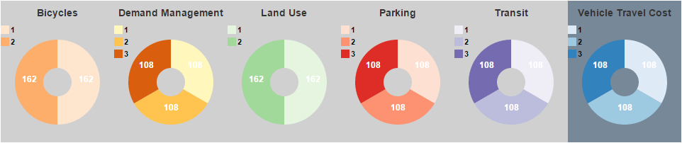

Detailed Instructions
Categories
Many factors such as parking pricing and transit supply affect light duty vehicle travel. Because the number of factors considered is large, they were grouped into 6 categories as follows:
- Bicycles The diversion of single-occupant vehicle travel to bicycles, electric bicycles and other light-weight vehicles.
- Demand Management Programs and incentives which encourage people to drive less including ridesharing, van pooling, telecommuting, and transit subsidies.
- Land Use The form in which development occurs (density, regional assessibility, mixed use, etc.) represented by the distribution of population and employment by place type.
- Parking The extent of paid parking and its price.
- Transit The extent and frequency of transit service.
- Vehicle Travel Cost The combination of fuel prices and vehicle travel charges to pay for roadways and to pay for externalities such as carbon pricing.
Levels
Several levels were defined for each of the categories. These levels are numbered to indicate the amount of change from a reference case which represents the continuation of adopted local plans, policies and trends.
- Level 1: Corresponds to current conditions.
- Levels 2-3: Representing more ambitious policies.
The levels are displayed in pie charts, one for each category, as shown in the following illustration.
Each pie chart has a legend showing the color associated with each level. The sizes of the pie slices show the proportions of the selected scenarios in each each level. The number of selected scenarios in each level is shown in the corresponding pie slices. You can select (or deselect) the scenarios in a level by either clicking on the pie slice or the corresponding legend entry. The selected level is colored and the non-selected levels are grayed-out.
Outcomes
Given the chosen category inputs, the web page also shows future year outcomes for the following performance measures:
- Fatalities & Injuries: annual traffic fatalities and injuries per 1000 persons.
- Vehicle Cost Per Capita: average annual cost for owning & operating vehicles per person.
- DVMT Per Capita: average daily vehicle miles traveled per person.
- GHG Emissions Per Capita: average annual metric tons of greenhouse gas emissions per person.
- Fuel Consumption: average annual gallons of gasoline and other fuels consumed per person.
- DVHT Per Capita: average daily vehicle hours of travel per person.
Each outcome is illustrated in a bar chart showing the range of outcome values for the selected scenarios. The bar height indicates the number of selected scenarios with that outcome value. The average value for all of the selected scenarios is shown above the bar chart. The following illustrations shows what the Fatalities & Injuries, Vehicle Cost Per Capita, and DVMT Per Capita bar charts look like when all scenarios are selected.

The bar charts can also be used to make a selection of scenarios. This can be done by hovering the mouse cursor over the bar at one end of the desired selection range. When the cursor is in the shape of a crosshairs, click and drag the mouse cursor to the other end of the desired range. The bar chart will change to show the selected range. In addition, handles will appear at the ends of the selected range. You can click one these and drag it to alter the selection. You can also click on the middle of the selection (when the shape of the cursor is a crossed arrow) to drag the whole selection to a different location on the bar chart. As you make a selection in one bar chart, all the other bar charts will change to show just the selected scenarios. The pie charts will also change accordingly. The following illustration shows a selection made on the Fatalities & Injuries bar chart and the corresponding values for the other bar charts in the row. You can see in the picture the crossed-arrow cursor shape which means that the whole selection can be dragged to a new position.

Selections can be made simultaneously on multiple pie charts and bar charts. As more selections are made, all of the charts will be updated to show the selections that meet all of the selection conditions. To clear all of the selections and show all of the scenarios, just click on one of the Clear All Selections links on the web page.
Selected Scenario Table
Finally, at the bottom of the web page is a table which shows the data for the selected scenarios. The values in this table can be copied and saved in a spreadsheet. To select the data to copy, double-click in the top left-hand cell, press the Shift key, and then click in the bottom right-hand cell. Once the data has been selected, copy it by pressing the Ctrl c keys for a Windows computer or the Command c keys for an Apple Macintosh computer. Paste as unicode text into the spreadsheet of your choice.